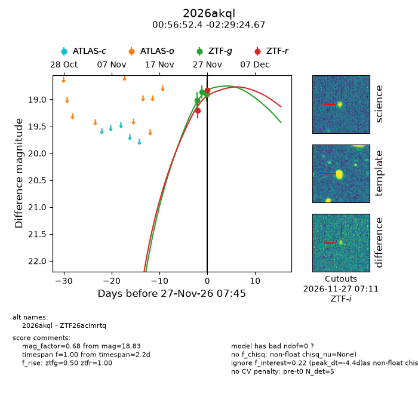
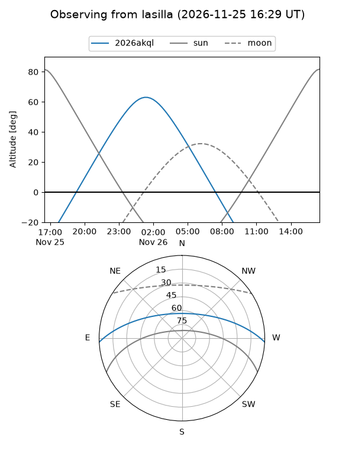
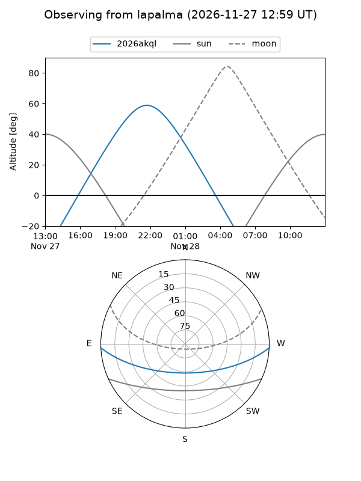
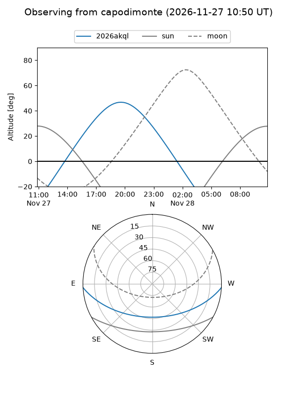
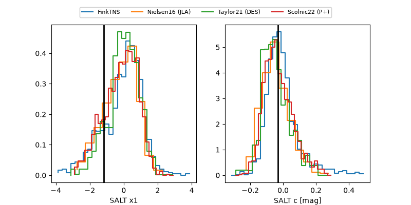

2026akql
Target 2026akql at 2026-11-27 07:46
Aliases and brokers:
FINK-ZTF: ztf.fink-portal.org/ZTF26acimrtq
Lasair-ZTF: lasair-ztf.lsst.ac.uk/objects/ZTF26acimrtq
ALeRCE-ZTF: alerce.online/object/ZTF26acimrtq
YSE-PZ: ziggy.ucolick.org/yse/transient_detail/2026akql
TNS name: wis-tns.org/object/2026akql
Direct TNS query: direct search
alt names
ZTF26acimrtq (ztf,fink_ztf)
2026akql (tns,yse)
Coordinates:
equatorial (ra, dec) = 14.2185,-2.49018
equatorial (HMS+DMS) = 00:56:52.44,-02:29:24.67
galactic (l, b) = (126.1860,-65.32758)
Flags:
peak dt: -4.4
Photometry:
last ztfg=18.91, ztfr=18.83
3 ztfg, 2 ztfr detections
Lightcurve

Visibility



Additional plots
